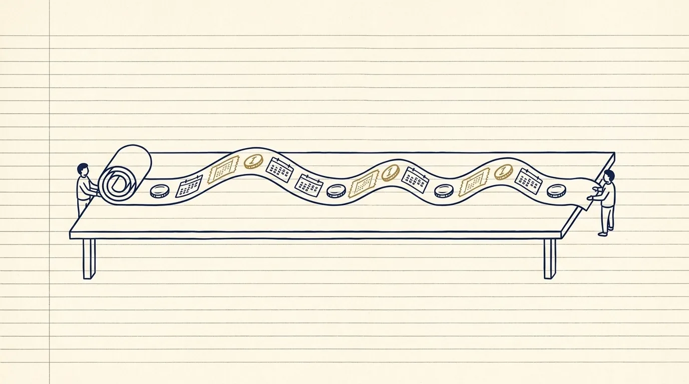

Fixed Income
Who holds what, why they hold it, how it was bought, how it is paid for, what can make it lose money, and who keeps it all inside the lines — told in simple words, one picture at a time.

A warm, ledger-paper illustration: ink-navy line art with a single brass-gold accent on cream paper, fine hand-ruled lines like an old trading-floor ledger, flat shapes, no gradients, no photographic detail. A schematic, not a picture. Subject: a long paper ribbon of coins and dated tickets unrolling across a table from one small figure to another, each ticket marked with a tiny calendar square — a stream of promised payments. No text labels baked in. Target size ~1280×720px, 16:9 landscape; compose for a small on-page figure with the subject centred and safe margins — it is letterboxed into a 16:9 box, so keep nothing important near the edges.
Generate this with your image agent, then drop the file here.
Contents
- 01A Pile of Promised Payments, and Who Owes WhomFixed Income Is a Business of Cash Flows
- 02The Big Family of Loan PapersThe Fixed-Income Product Family
- 03From “Here Is Your Job” to “Here Is What We Hold”From Mandate to Portfolio Position
- 04How a Wish to Buy Turns Into a Bought ThingOrders, Axes, and Execution
- 05Who You May Trade With, and How MuchCounterparties, Credit, and Limits
- 06Lines and Gaps That Tell You What Is CheapCurves, Spreads, and Relative Value
- 07How Much You Lose When the Wind ChangesDuration, DV01, Convexity, Carry, and Roll
- 08Borrowing Cash, Handing Over PledgesFunding, Repo, Collateral, and Settlement
- 09Can You Sell It, and What Is It Worth Today?Liquidity, Market Data, Research, and Models
- 10One Trade, From Morning to NightA Day in the Life of a Fixed-Income Trade
- 11The Gentle Number CornerThe Fixed-Income Math Primer
- ★The One-Page Cheat CardCheatsheet